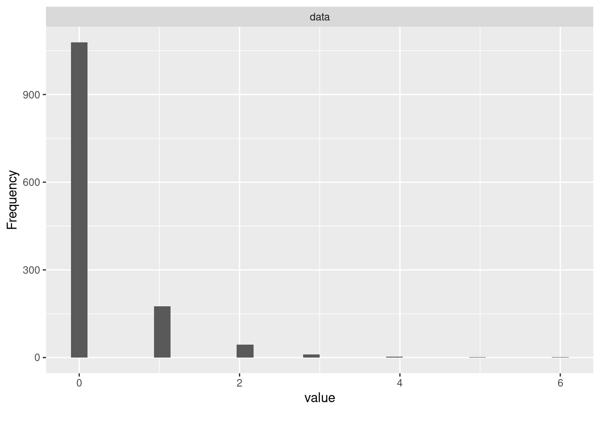

4 Describing SIDS Deaths
Our primary outcome in the analysis is:
count_asphyxia = the count of SIDS-related deaths in each census tract
This is a count-type outcome, which is typically modeled using the Poisson or Negative Binomial distributions. I will be using the Negative Binomial, since the Poisson is limited by having its variance needing to be equal to its mean.
Here we visualize the count_asphyxia distribution of count frequencies.
DataExplorer::plot_histogram(df$count_asphyxia)
As expected, the majority of census tracts do not have any SIDS-related deaths.
It’s a little hard to see the tail of the distribution so let’s tabulate:
janitor::tabyl(df$count_asphyxia)[,1:2]
#> df$count_asphyxia n
#> 0 1078
#> 1 176
#> 2 44
#> 3 11
#> 4 3
#> 5 2
#> 6 1